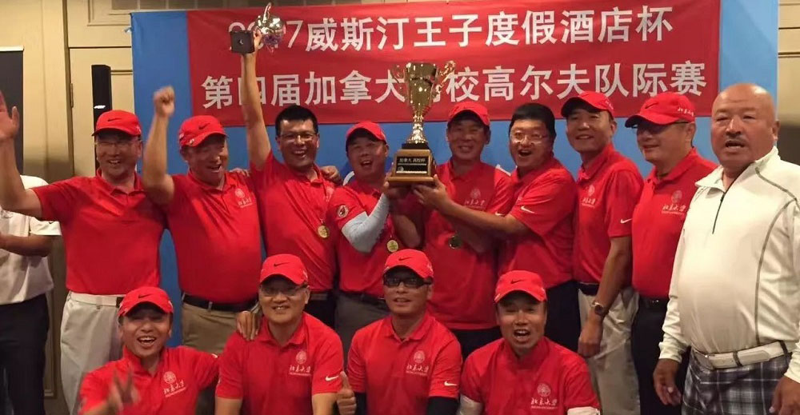

七月 22, 2018
北大是第四届的冠军得主，团体冠军+双人冠军。
今年赛制、参赛队伍都有一定的变化，我们发挥学校优势，众志成城、团结一致，必将卫冕成功！
我们需要更多优秀的球手加入我们球队，请大家推荐会打高尔夫的校友参与我们球队。
北大高尔夫球队联系办法：
1、邮件：zhongfali@gmail.com
2、手机：647-262-4136

2018加拿大“高校杯”高尔夫联赛
赛 制 公 告
主办方： 浙江大学加拿大校友会
加拿大“高校杯”高尔夫联赛，经过前四届的精心组织与发展，已具备一定的规模和社会影响。根据加拿大高校高尔夫协会理事会对未来“高校杯”联赛远景规划，确定2018年“高校杯”联赛赛制，并将在如下方面做出努力：
1、 界定并执行加拿大“高校杯”联赛的参赛条件，给予本土校友高尔夫爱好者更多的参与空间；
2、 将单日赛程扩大到年度适季系列积分赛程，并鼓励高尔夫运动的普及；
3、 “高校杯”的授予和排名，将综合各校球队的顶尖水平和整体基础，努力提高校友中达到一定水平的高尔夫爱好者的参与度和对本校球队积分排名的贡献度；
4、 努力提高比赛规则执行的专业化。
一、 选手资格
1、具有代表其高校的本/硕/博或 MBA/EMBA 的学位证书，并尽可能在报名系统注册登记时同时上传相关个人的合格学位证书；
2、限定加拿大和美国的校友（国籍或 PR 或驾照）参加；
3、加拿大（国籍或 PR 或驾照）的参赛选手应达到或超过该校友会注册选手的 50%，同时，队际赛各校 4 位参赛选手中至少应有 2 人来自加拿大（国籍或 PR 或驾照）；
4、选手具有不同学校学位的，在本年度赛程中只能代表一个院校，由本人自主选择，不允许在不同场次发生变更；
5、选手差点原则掌握在 30 以内；
6、考虑到中国高校重组，各校队按中国相应高校范畴组队，拒绝跨校联合组队。作为特例，允许女子联队和高校联队参赛，但不计算团体排名。
各校队长对本队参赛选手的资格负有审核把关责任。对于各场比赛的前五名的参赛队伍和选手，组委会有权核查或要求其提供队员具备代表该队的相关学位证书。
– 如发现并经证实作假报名参赛或无相应合格学位证书的，取消个人或双人积分，队际赛团队按 DQ 处理，取消所获奖项；
– 视情况严重程度，报加拿大高校高尔夫协会理事会批准，将予以停赛一年的处置。
本届比赛将考虑赞助商和社会活动的需要，由组委会特别邀请总数不超过 5 个非高校队参加“高校杯”，具体人数将根据最终报名情况予以限定。所有特别邀请的非高校队，不参与团体积分排名和个人奖项。
二、 注册时间与费用
1、 考虑到赛制安排、球场的落实，所有计划参加2018年“高校杯”联赛的选手均需注册。为保证各校队长其负有对选手资格审核把关责任的履行，以及其对球队的管理和组织，所有选手注册均需通过高校队长统一登陆“高校杯”专门网站（www.alumnigolf2018.com)进行注册。
2、 首轮注册， 于2018年1月1日开始至2018年3月31日截止；后续根据报名和赛场落实情况，可继续开放报名注册，但将按报名先后顺序和预定赛场人数限定，决定其可否参赛。全部注册原则上将于每场比赛前两周截止报名。
3、注册截止后，由组委会统一与各队队长汇总核对各校友会选手的报名情况。
4、注册时暂不缴费，随后将根据组委会通告各场缴费标准后，根据经组委会与各队队长核实确认的球员合格的参赛报名场次，在2018年6月20日前，由各队队长统一向组委会缴费。预期不能缴费的，组委会不能保证其参赛名额。
三、 赛制
本届“高校杯”联赛涵盖全年四场赛事：二场个人赛（积分）、一场双人赛（最佳球位）、一场队际赛。具体比赛日程为：
– 2018年7月22日下午，第一场个人赛，Copper Creek Golf Club；
– 2018年8月05日下午，第二场个人赛，Copper Creek Golf Club；
– 2018年8月26日下午，在Lionhead两个赛场同时进行双人赛和队际赛，其中双人赛为Masters球场，队际赛为Legends球场，比赛当晚将举行“高校杯”颁奖晚宴。
1、 队际赛与双人赛同时进行，选手只能参加其中一场。
2、 所有球员均可以参加个人赛，但，
– 总报名球友达到或超过6人的，该队每位选手在个人赛中只能选择其中一场参加。
– 总报名球友少于6人的，该队每位选手可选择参加二场个人赛。
3、 每场参赛总人数上限为120人（shotgun），并于比赛日之前两周截止报名。除组委会特邀的非高校队外，其他选手须为经注册并已缴纳参加本场比赛注册费的队员。
4、 个人赛、双人赛，在优先保证每个高校二人参赛名额的前提下，以先报名为先，各校参赛人数以不超过16名为上限（含参加队际赛的4名球员）。个人赛名额也将优先保证各校参加队际赛和双人赛的球员。校际赛以每校一队4人参赛，名额报满截止。
5、 本届“高校杯”联赛的所有比赛，尽可能选择品质较好、有挑战性的球场。原则上选择男子蓝T（6400-6700码），女子白T（5700-5900码），果岭速度9-10。
四、 积分、排名和主要奖项
1、 本届“高校杯”设团体前三名，冠军授予“高校杯”，亚军、季军授予奖杯；
团体名次以各项赛事总积分加权法按高低排名，具体公式：
团体总分 = 队际赛总积分x 55%＋双人赛总积分x 25%＋个人赛（1）总积分x 10%+个人赛（2）总积分x 10%
2、 本届“高校杯”联赛设男、女个人前三名和双人前三名，其中：男、女个人前三名仅从队际赛当日成绩中产生，以确保校际赛单项的高水平，分别授予奖杯。
3、 队际赛，以每队4人参赛日总杆累计后按高低排出名次，后按如下第6条计分办法，得出队际赛总积分，在“高校杯”网站及时公布。
4、 双人赛，以每对选手总杆高低排出名次，产生“高校杯”年度双人赛前三名，分别授予奖杯。同时，分别依名次按如下第6条计分办法计算每对选手的得分，累计出各校队双人赛的总排名；再依各校队总排名顺序，按如下第6条计分办法，得出校队双人赛总积分。上述成绩与奖项，在“高校杯”网站及时公布。
5、 每场个人赛，按分数（points）分别进行排名，只取积分，不设奖项。
分数计算方法为累计每位选手18洞单洞分数，其中：信天翁（12分）；鹰（8分）；鸟（5分）；帕（3分）；柏忌（2分）；双柏忌（1分）；三柏忌及以上（0分）。
每场个人赛结束后，组委会将对个人赛进行排名，各校队在每场个人赛上的积分来自于累加该场次各自队员积分（points）进行总排名后，依排名顺序，按如下第6条计分办法，得出校队个人赛场次总积分。上述成绩和积分在“高校杯”网站及时公布。
（注：个人成绩不参与个人年度奖项）
6、 队际赛、 双人赛和个人赛排名积分折算方法：
第一：100分
第二：98分
第三：96分
第四：94分
第五：92分
第六：90分
第七：89，之后名次均相差1分，直至排到最低0分
7、 如出现各场次比赛出现总杆数或者积分相同，无论校队、双人还是个人，以鹰、鸟、Par依次对比，多者胜出、排名靠前。
五、 其他奖项
除上述奖项外，本届“高校杯”联赛还将设立部分附属奖项，将另行决定。
六、 相关信息公告
本届“高校杯”联赛筹办与赛程的主要信息与公告，将以“高校杯”网站（www.alumnigolf2018.com)发布为主，微信群为辅，请各校友会球队和全体球友密切关注。
2018年“高校杯”组委会
二O一七年十一月二十二日
|